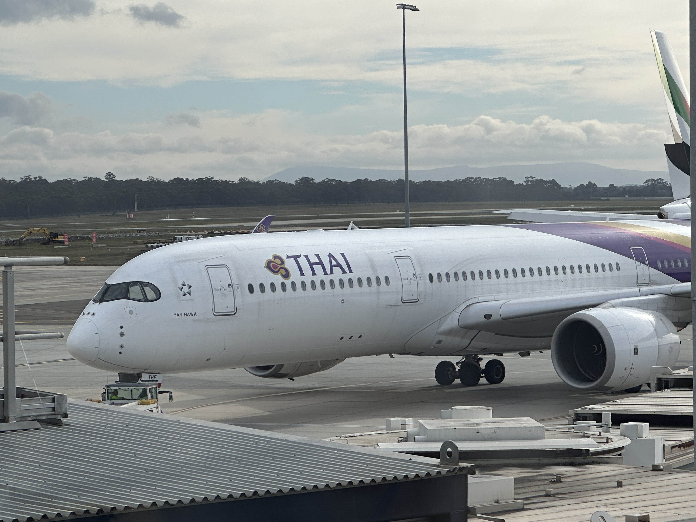
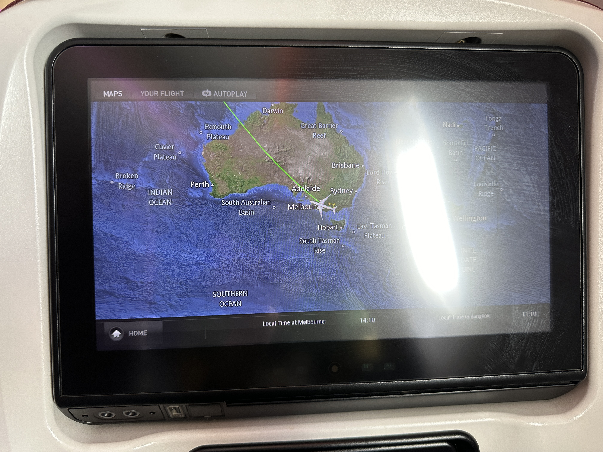

NEWS
Flight review: Thai Airways TG466 Melbourne (MEL) to Bangkok (BKK)
Today I will be flying Thai...
Airways TG466 from Melbourne Airport (MEL) to Bangkok (BKK) on a A350-900.
The checkin was pretty fast with no delays. A massive Qantas Airbus a380 was parked outside our terminal.
I got a look at the airplane before boarding from the terminal. It’s a beautiful A350-900 in Thai airways livery.
Boarding was also pretty fast and soon we were taking off. I would give the comfort and cabin service a pretty good review for this
airline. The seats were comfortable and padded. The entertainment screen is decent quality with lots of entertainment options, a sky chat window and pretty fast. There were some annoying ads, though.

Another nice feature was the tray table that had an option for just a drink with a partial fold down.
After takeoff, meal service started for lunch and the inflight meal was actually surprisingly good for something microwaved. There were vegetarian options as well as beef and chicken options for the main course. After that there were some sides such as smoked salmon and slaw, a brioche bun and carrot cake.
Overall, the flight was a good experience with an impressive entertainment system and it might be a good airline for your next trip.
Latest news

Chinese airlines reopen routes to Australian cities
Chinese airlines have recently reopened...
routes to Australian cities like Perth, creating a boom in economics because of Chinese people being the hihest per capita spenders. Resuming flights between Guangzhou and Perth will increase tourism and connectivity.
It's nice to see Chinese airlines resuming flights to Australia after the Covid outbreak.

Top 5 biggest hubs of United Airlines in 2024
5. San Francisco International Airport (SFO)
San Francisco is one of...
United's largest hubs, with the #5 most flights.
4. Newark Liberty International Airport (EWR)
With over 140,000 flights, Newark Liberty international Airport takes #4
3. Houston George Bush Intercontinental Airport (IAH)
Houston is the 3rd busiest of flights, so it is a big hub of United
2. Denver International Airport (DEN)
Denver is the United airlines hub with the second largest amount of flights.
1. Chicago O-Hare International Airport (ORD)
Chicago is United's largest hub based on flights with a whopping 179,835 flights.
iPhone 16 and iPhone 16 Pro
The new iPhones are here! First, is the iPhone 16, with some halfway decent improvements. Next, is the iPhone 16 Pro, and the only reason you should buy it is the new 48MP ultrawide camera.

United receives first 737 max 8 in more than 2 months
After more than 2 months of delay, United Airlines has ...
received another 737 Max 8, which is likely to enter service soon. N37351 was the first 737 max 8, which will be followed by more later in the year.
Editor's picks

Which airline to pick for your next London-New York flight
The London-New York route in airlines is a very...
busy route and is operated 12 airlines, 7 flying nonstop.

Category 1: price
Norse Atlantic wins by far out of price with the cheapest offerings of any airline.

Category 2: Comfort
American Airlines and British Airways are the only airlines to offer first class for the flight, apart from inconvenient stopovers from airlines like Swiss and Lufthansa. Finnair also offers firsts with nonstop but the price is totally ridiculous compared to AA and BA.
American flies the 777-200 and 300ER for its transatlantic crossings, while British utilizes its 777 for its London Heathrow to while using its 787-10 for its flights to Newark (which is technically in New Jersey but is considered as a New York airport for its use to access New York)
If you want a balance of price and comfort, Jetblue Mint business is a good choice. It boasts to have the largest chair and TV of any US airline all for a pretty good price. One problem that you may not consider is Jetblue uses narrowbody A321s for the crossing, which take a good 30mins longer than a 777 or A350.
United Polaris business class is regarded to be one of the best airline business classes, which it utilizes its Boeing 767s and Boeing 777s. So if you want a good business class, United would be a good option.
However, pretty much all of the airlines (except for Norse because it is so budget) offer great premium options so if you're looking for comfort basically every airline will be good.
Category 3: Reliability and frequency
American, British Airways and United dominate in terms of frequency with many flights between the two metropolises per day so if you have a specific timeframe they would be a good option. Virgin Atlantic is also pretty frequent, but not as much as British Airways.

Best value business class
Today we will not only be going into the price of business class with different airlines but...
seeing how good the business class is and if it meets our expectations. For example, Jetstar business does not meet our expectations of comfort, even though it has a really low price.

Jetblue:
Jetblue offers a fully reclining seat and the largest TV and bed space of any US airline. With their new Mint business class, a fully enclosed suite with lie flat beds and a large television are offered along with large overhead bins, mood lighting and a high quality mattress, all for a good price for business class.

China Eastern:
China eastern has an even better value business class, with reclining seat, meal service, privacy doors and other features in their suite but the best part is the price. China eastern is a cheap airline and offers such a good value business class compared to the hugely expensive business from other airlines.

Kirin 9000S - An amazing innovation
The Kirin 9000S is purely using Chinese technology. However, it performs poorly, at least compared to the Snapdragon 8 Gen 3. At least it's 5G ...
, and this is a true great leap forward in Chinese technology, because it signifies that China is starting to be able to make its own chips, and the Kirin 9100, rumored to come out in Q3 2024, is rumored to have much better performance.
Other news

Maths
Now, there's a maths page on Banana News! Delve into the wonderful journey of maths with out maths wabpage that is based on the Australian curriculum.

The Comac C919 - The future of Chinese aviation
Comac, which is a chinese aviation company...
has recently developed their newest airliner, the C919. It will rival the Airbus A320 family and the Boeing 737 family, both of which are getting old. So far the orders are only from Chinese airlines but they will likely be orders from other airlines in the future.

Chinese premier flies to Australia
After visiting New Zealand, the premier of...
China flew from Auckland to Adelaide, visiting the zoo and then flying to Canberra and finally Perth. The aircraft used was an Air China 747-8 that was approximately 9yrs old.
The flight became #1 most tracked on flightradar24 because of its popularity and importance. Also, it seems slightly ironic that an american airplane would be the flagship and air force 1 of China.
Argentina withdraws from BRICS
Argentina's new president, Javier Milei, has recently backed out of...
BRICS, a rapidly growing alliance that was founded by Brazil, India, Russia, and China. The president's new decision was idiotic. The 'reason' he gave for the stupid decision was that the Argentina's geopolitical alignment is with the US and Israel, not communist governments. Argentina is only going to go down its slippery slope of bankrupcy further with this decision, as China has saved Argentina from going bankrupt many times. Argentina is already becoming poor, and it will become even poorer now. This is because that no country can save it from going bankrupt and completely collapsing. Yay! Another failed state is about to be born.

Turkish airlines launches sustainability brand
On June 5, World Environment Day,...
Turkish Airlines launched its sustainability brand (Tomorrow On-Board.) The carrier marked the occasion with a special event at its hub at Istanbul Airport and displayed its sustainable in-flight products and services, along with items made from repurposed aircraft parts.


Top rated airlines of 2024
Today we will be rating the top rated airlines of 2024. We will be...
moving into different categories such as price, comfort, fleet size, destinations and service. Then we will determine the best airline in general
Category 1: Price

Spirit, Frontier, Ryanair and Airasia are all extremely cheap airlines. Choosing the cheapest will depend on the route and convenience. If you live in the USA, Frontier or Southwest would probably be the cheapest option, but for flights within Asia, Airasia, Scoot, etc. might be cheapest.
Category 2: Comfort

Singapore Airlines.
Emirates, Etihad, Singapore Airlines and Qatar Airways all offer great comfort, but in a general scope I would say Singapore Airlines wins out.
When comparing comfort we obviously don't have to worry about the route, since we are just comparing the general comfort of the airline in first class. While airlines like Emirates offer an onboard bar, with Emirates and Etihad providing showers, Singapore Airlines would win out in general because of their bed quality.
Category 3: Reliability and service

Qatar Airways.
Comparing the reliability of airlines, Qatar Airways wins out because of their immense customer service and reliability.
Category 4: Destinations
American Airlines.
Even though other airlines such as United Airlines, Turkish Airlines and Delta Airlines offer huge amounts of destinations, American Airlines wins out with 350 destinations.
Category 5: Fleet size

Delta Air Lines.
While United and American come up close, Delta Airlines wins by fleet size with 991 aircraft in service.
 Spirit Airlines has no plan to file for bankruptcy
Spirit Airlines has no plan to file for bankruptcy
Following the failed merger between low cost carriers Spirit and JetBlue...
Spirit has announced that they have no plan to file for chapter 11 bankruptcy any time soon.
In case you didn't already know, Spirit is an ultra low cost carrier that is not very comfortable to fly on. After Jetblue's plans to acquire the airline were rejected, Spirit airlines has been struggling to stay alive with huge losses and increased competition from other carriers. After some engine failures discovered, Spirit has had to ground many of their aircraft and has been having trouble pulling in enough revenue. Trying to think of ways to increase revenue, Spirit has made changes to some policies such as increasing the maximum baggage weight allowed to check in.
The conclusion? Spirit is having trouble and may become bankrupt in the next decade.
The Boeing 747 - The aircraft that changed the world for the better
Ever since the first flight of the Boeing 747-100 in 1969, over 55 years ago...
it still soars in the skies as one of the most influential aircraft in history.

Pan Am (Pan American World Airways) was an airline regarded for its luxury that went bankrupt in 1991 and the launch customer for the aircraft. It was also a huge influence on the development of the aircraft to a scale very scarce today. The introduction of the first wide body jetliner was a huge improvement to air travel - slashing flight ticket costs to make flying a more economical solution for everyone.
The -200 was very similar to the 747-100 but with a stretched upper deck. The original upper deck was just a strange space behind the cockpit, only created for allowing it to function well as a cargo aircraft, but airlines soon started making use of the space. Some of the most noticeable were Qantas’ Captain Cook Lounge, American Airlines’ upper deck piano bar and Pan Am’s onboard restaurant that included a full menu and proper restaurant tables.
The 747-300 was another advancement to the aircraft, with the upper deck stretched again and more improvements made.
The -400 was the most popular variant and one of the most important because of its use from so many airlines. Pretty much every large airline that was around at the time had operated the 747, because of its amazing specifications in capacity and price for tickets.

Lastly, the -8 was the final and largest variant with a stretched upper deck and fuselage, as well as the curved wingtips and many modern technologies that were from the 787 program.
Sadly, the same reason for its success has proved to be its downfall as these days airlines don’t really want such a high capacity airliner (the same goes with the a380) that takes such a lot of fuel and other costs to operate. It can definitely be said that when Boeing introduced the high tech advanced 787 Dreamliner they basically killed the A380 and their 747 at the same time.
Nonetheless, after 55 years many airlines some airlines still operate the type, which are Lufthansa, Korean Air, Air China, Saudia and Asiana. (Saudia and Asiana are not even long term airlines operating it as all of their 747-400s will be retired in less than a year). There is still some hope with the others because they operate newer 747-8s which will likely be around for a longer time.
Lufthansa will still aim to get rid of their 747s, because they are awaiting the Boeing 777x - a huge widebody airliner that will be delivered in 2025 and has attractive capacity and range to totally replace the 747-8. Korean Air also aims to retire the type, while Air China seems satisfied with their 747-8s which they use to fly between Beijing and Shanghai, Frankfurt, Sao Paulo and New York JFK to name a few.

2024 hot cross bun season length is crazy
This year, hot cross bun season started in January and is still...
going strong even in June. This is totally crazy. In previous years, the season starts around February and ends in late April, lasting for 2 months, but this year it has somehow lasted for about 5 months.
Hot cross buns are a popular food and supermarkets might stock them if there was sufficient demand. It seems like Coles is going to stock them all year round. This isn't a bad thing (for normal people) and it seems nice to have the option of eating them at any time.

Freighter airlines use such old aircraft
Freighter airlines often seem to use very old aircraft such as...
A300s, DC10s, MD11s, A310s and 747s. But why are they using these old planes and not more fuel efficient newer aircraft. Freight airlines often get their aircraft at a discount from previous passenger services, acquiring old planes at a very cheap price. They don't need to worry about fuel efficiency to pay of the price they paid because they got it so cheaply. Meanwhile, passenger airlines which are flying their planes on many routes at many times need their aircraft to be fuel efficient, while freighter airlines might only need to fly a couple times a day.
If you don't need to fly many times a day with your aircraft, purchasing a cheap one is a good idea. And cheap aircraft are often old second hand ones from passenger airlines.

747s over Melbourne become a rare treat
Boeing 747s were never hugely common around Melbourne, because even when Qantas operated a huge fleet they...
would more likely be deployed on long haul international routes and coming to Melbourne would be pretty uncommon.
These days, when only 4-5 airlines (soon to be 3) still operate 747s for passenger service, basically the only chance of seeing a 747 around Melbourne is for cargo. Cathay Pacific Cargo, AtlasAir, UPS, etc. sometimes have flights to Melbourne using 747-8s or very rarely, -400s.
Recently, an Atlas Air 747-400 flew over Melbourne, landing at Melbourne Airport and last year a Cathay Pacific Cargo 747-8 flew over. Soon 747s will only be operated for cargo service, and later they won't be there at all. Future presidents may be the last people to fly on the Boeing 747.

New iPad Pro and iPad Air
The new iPad air is bad. However...
This year's iPad pro is good for pro iPad users. If you are not a pro iPad user, either get the iPad 10, or wait for the iPad 11.

(above): The new Airbus A220 of QantasLink with its beautiful green livery.
QantasLink buys new A220s
QantasLink has received deliveries of their new Airbus A220s. They....
there is a new plane coming in 2030!! it is...

called the a390!! it is a very new plane and there is 2 models and in 2025 we will vote which model is better go to the airbus website to vote it is a very exciting and new experience to this world place your votes!!! one is the super fast luxury fast plane going 400 kts which is almost 600 miles per hour other one can have 468 passengers which goes 200 miles per hour

Boom first flight in 2027
The first flight of the Boom passenger jet is scheduled for 2027, if all goes well with the engines. It will be an exciting moment, because there have been no supersonic passenger jets since the Concorde.
Comac C929 first fuselage scheduled for 2027
After creating the ARJ21 and c919, Comac has addressed the competition for...
widebody aircraft and plans to release their newest aircraft in 2027.Comac as reported that the ‘first middle section of the fuselage of the c929’ will be delivered in 2027.

Concept art of the c929
We will update you on more news about the c929 in future articles.

Emirates orders 65 A350 aircraft
Emirates has confirmed orders for 65 A350-900 aircraft, ten of which took flight at the Dubai airshow. We are anticipating the enter of the high tech modern aircraft into Emirates' fleet.
Boeing schedules 777x deliveries for 2025

The first handover for the Boeing 777x is to be scheduled for 2025, to Emirates, the first customer.
The 777X is Boeing's latest generation of aircraft, a long range high capacity widebody designed to compete with the Airbus A350....
Emirates is pushing Boeing to release it but they have announced that it will be delivered in 2025. I am wondering why Emirates also chose the 777x for their fleet, since the A350 is lighter and requires less fuel but I think its probably because of the higher capacity and since its now the biggest commercial aircraft on the market, Emirates wants to purchase it to eventually replace the A380, which has ceased sales.
Even since the first flight was in 2020, it commonly takes 5-7 years before the aircraft is released to the market, and I am excited for the first delivery.
US decides on 747-8 as new Air Force One

After many years of usage of the current US Air force ones the US has decided to buy two new Boeing 747-8s which will be...
(above): the color scheme of the new us air force ones that rejected donald trump's design which featured red, white and blue.
After Donald Trump lost his seat as president his design for the new Air force one, that featured dark blue as well as the addition of red, was rejected. Joe Biden wanted to stick to the original design that has been present on the Air Force one since the 1960s.
It has been reported that the design was rejected "because the dark blue would require additional modifications to ensure safety" and because Joe biden wanted to "stick to the original color scheme
Qantas to start operating project sunrise flights from 2026

From mid 2026, Qantas will start operating their project dubbed “Project Sunrise” which are nonstop flights...
from Sydney to London and New York. The chosen aircraft was the a350-1000. Despite not being the commercial aircraft with the longest range, which it uses to its smaller sibling the A350-900ulr, it was chosen for the flights because of its attractive range and capacity.
The Qantas 787 dreamliner with centenary livery.
The original research flight from London to Sydney took place in 2020, when Qantas' newest 787 dreamliner stayed in the air for 19 hours 19 minutes straight before arriving in Sydney.

MacBook Pro
I regret buying my MacBook Pro M1. Apple Silicon- It's a joke. Get a Lenovo Carbon laptop instead.

China and its vehicles
China has been the largest producer of vehicles for a while now. And China is producing vehicles at a great value- much cheaper and ...
with similar specifications to Ford, Mercedes, or Tesla. China is also not lagging in vehicle technology, as China has produced many e-vehicles over the past few years.

Australia
Australia should really consider quitting from the US doggy club and be more independent. Australia should also exit the commonwealth and become a republic.
China's recent news
There have been people saying that a former Chinese secret police has 'exposed' the Chinese 'regime'. Honestly, it is only too likely that the Chinese police said that to make the western governments happy.
The USA's net worth is negative??
The debt of the US exceeds the GDP of the USA. Does that make the US have a negative balance?